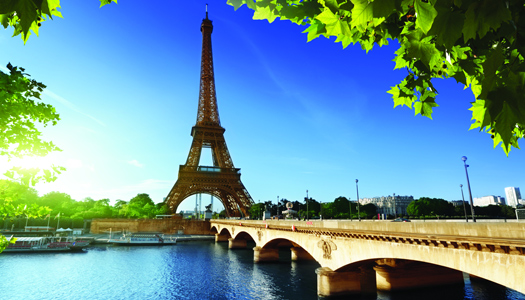
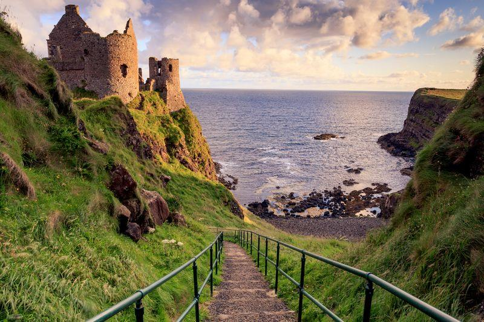

Explore alguns lugares mais incriveis da Europa...
PARIS

Paris é a capital e a mais populosa cidade da França, com uma população estimada em 2020 de 2.148.271 habitantes em uma área de 105 quilômetros quadrados.
Desde o século XVII, Paris é um dos principais centros de finanças, diplomacia, comércio, moda, ciência e artes da Europa.
A cidade de Paris é o centro e sede de governo da região administrativa de Ilha de França, que tem uma população estimada em 2020 de 12.278.210 habitantes, ou cerca de 18% da população da França.
Em 2017, a região de Paris teve um PIB de 709 bilhões de euros.
De acordo com a Pesquisa de Custo de Vida da Economist Intelligence Unit em 2018, Paris era a segunda cidade mais cara do mundo, atrás apenas da Singapura e à frente de Zurique, Hong Kong, Oslo e Genebra.
IRLANDA

A Irlanda, por vezes chamada República da Irlanda ou então Eire, é um estado soberano da Europa que
ocupa cerca de cinco sextos da ilha homônima.
É uma república constitucional governada como uma democracia parlamentar, com um presidente eleito para
servir como chefe de Estado.
Considerada um país desenvolvido, a Irlanda tem o terceiro maior Índice de Desenvolvimento Humano do mundo,
além de ótimas classificações em índices que medem o grau de democracia e liberdades como a de imprensa,
econômica e política.
Além da União Europeia, a Irlanda também é membro do Conselho da Europa, da Organização para a Cooperação e
Desenvolvimento Econômico, da Organização Mundial do Comércio e da Organização das Nações Unidas.
Sua capital é Dublin e a população do país é estimada em 4,8 milhões de habitantes.
GEORGIA
A Geórgia é um país da Europa Oriental.
Limita-se com a Rússia a norte e a leste, a sul com a Turquia e a Arménia, a leste e a sul com o Azerbaijão e a oeste com o mar Negro.
Sua capital é Tiblíssi, que também é sua maior cidade.
O país é uma república unitária, semipresidencial, com o governo eleito através de uma democracia representativa.
Seu território é de 69 700 km² e sua população, conforme estimativas de 2017, é de cerca de 3,718 milhões de habitantes.
Mais de um quarto da população vive na região de Tiblíssi, com outras grandes cidades sendo Cutaisi, Batumi e Rustavi.